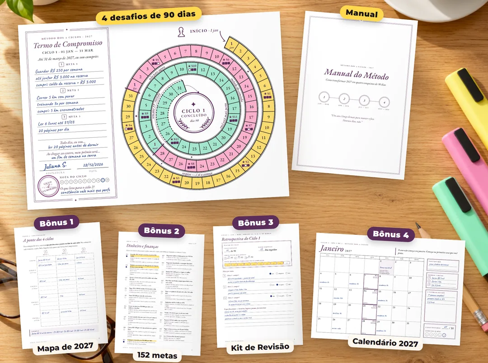
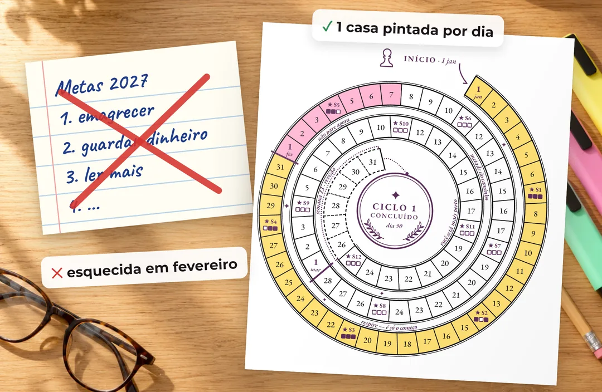
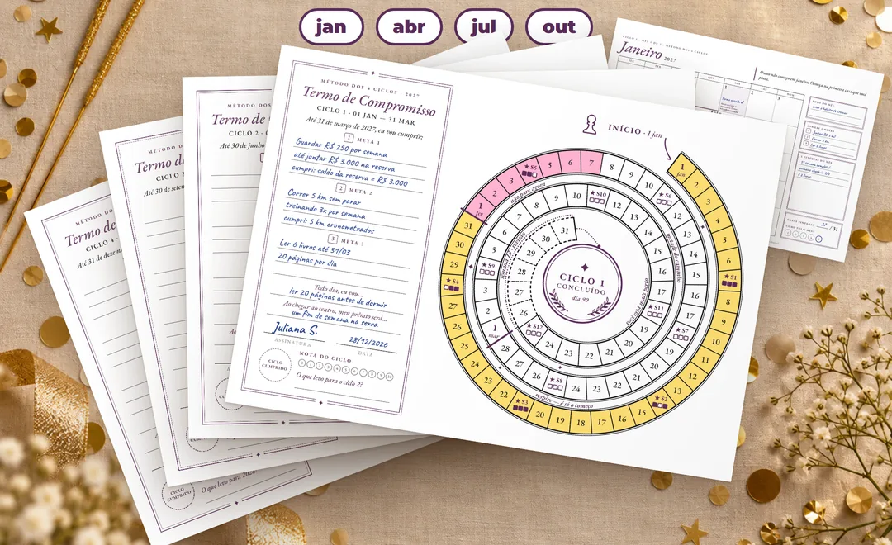
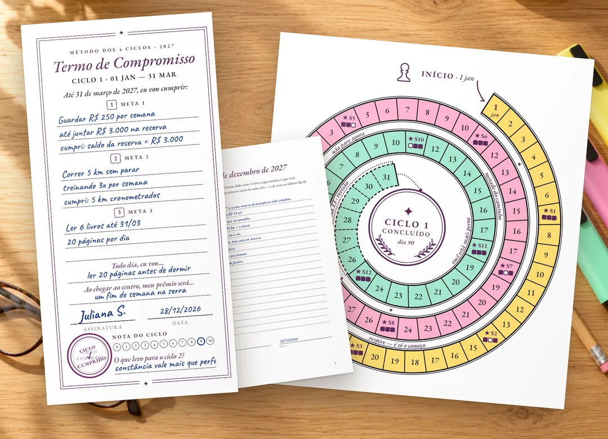
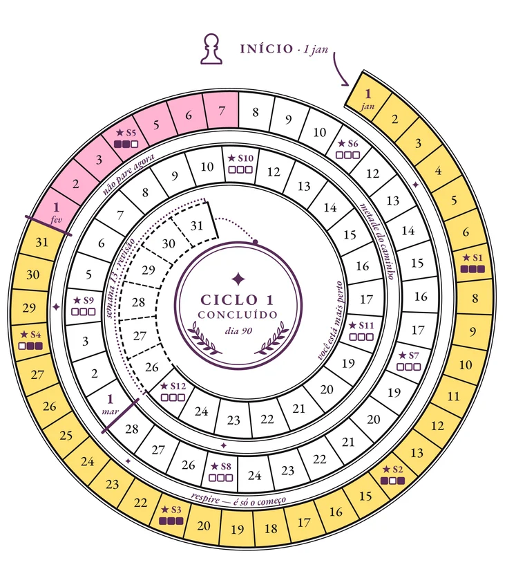
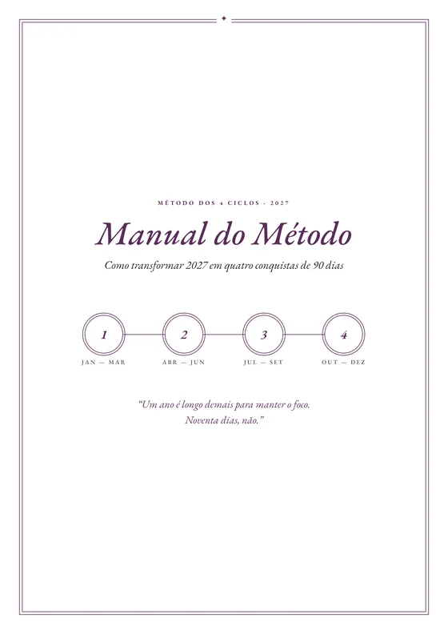
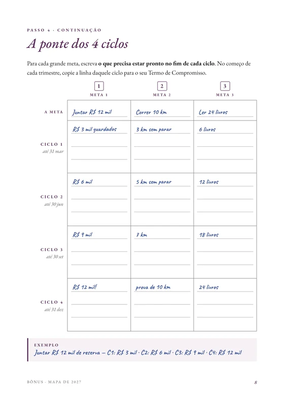
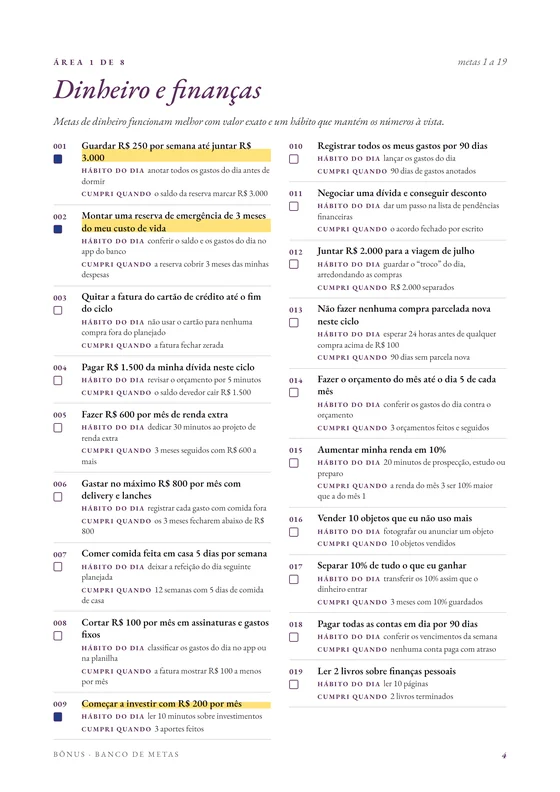
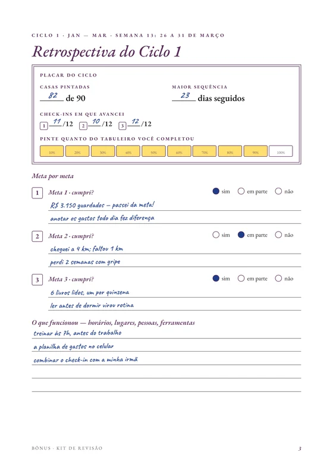
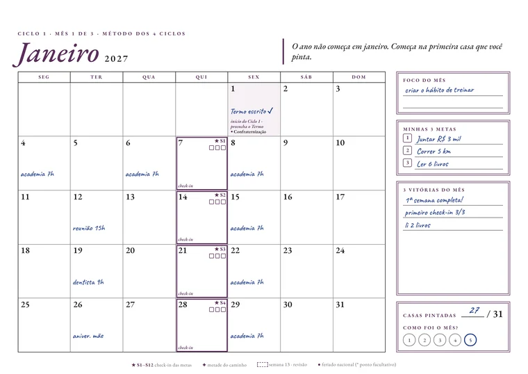

Método dos 4 Ciclos · 2027
Troque a lista que fica na gaveta por 4 desafios de 90 dias, com 1 quadradinho para pintar a cada dia cumprido.

Comece em 1º de janeiro: dá tempo de imprimir e preencher com calma.
Guardar dinheiro. Cuidar da saúde. Ler mais. Escrita com capricho no fim do ano…
Em janeiro, a lista fica à vista e a vontade está lá em cima. Aí vem um dia corrido, depois uma semana sem olhar para ela. Em março, ela já está na gaveta. E em dezembro chega aquele aperto conhecido: abrir o caderno e encontrar as mesmas promessas do ano anterior.
Algum destes pensamentos parece familiar?
“Esse ano eu começo pra valer.”
“Amanhã eu volto, hoje não deu.”
“De novo ficou tudo no papel.”
Não é falta de força de vontade. É o prazo: um ano inteiro é longe demais. Em janeiro, dezembro parece que nunca vai chegar… até que chega.

A lista espera você lembrar dela. O quadradinho em branco chama você de volta todo dia.
O método
Mesmo que, até hoje, nenhuma lista tenha passado de fevereiro.
Em vez de uma meta para 365 dias, você vive o ano em 4 desafios de cerca de 90 dias. Noventa dias é perto o bastante para enxergar a chegada. E se um ciclo sair torto, o próximo recomeço está a poucas semanas, não a um ano.

Como funciona
Sem aplicativo, sem senha, sem planilha. À esquerda, o seu Termo de Compromisso. À direita, o tabuleiro em espiral, com um quadradinho para cada dia do ciclo.
Escreva suas 3 metas, o hábito de todo dia e o prêmio que você vai se dar ao chegar ao centro. Depois, assine: é a sua promessa, por escrito.

Um por dia, do primeiro dia do ciclo até o centro: . Depois de alguns dias pintados, dá vontade de não quebrar a sequência.
A cada 7 dias aparece uma estrela com 3 marcadores, um para cada meta. Avançou na semana? Marque. Você vê o caminho andando.
Chegou ao centro? Carimbe o selo de ciclo cumprido, dê a nota do ciclo e resgate o seu prêmio. É a prova, no papel, do que você cumpriu. Aí começa o próximo.
Você olha para a parede e vê os 4 tabuleiros pintados até o centro. No lugar de uma lista esquecida, 4 ciclos cumpridos, quadradinho por quadradinho.
As 4 páginas já vêm com as datas de 2027, os check-ins de cada semana e o número certo de dias de cada ciclo.
Toque na página para ampliar. Exemplo preenchido; você recebe as páginas em branco.
O que você recebe

O lugar onde a sua promessa vira quadradinho pintado: uma página por ciclo, com o Termo de Compromisso e o tabuleiro em espiral, já com as datas de 2027.4 páginas, uma por ciclo

Para não travar no primeiro dia: como escrever metas que dá para cumprir, preencher o Termo e usar o tabuleiro, com o método resumido em uma página.16 páginas

Descubra o que você quer ver em dezembro antes de começar: feche 2026, faça a sua Roda da Vida, escreva uma carta para o seu eu de 31/12/2027 e divida as grandes metas nos 4 ciclos.8 páginas

Nada de travar na folha em branco: 152 metas prontas em 8 áreas da vida, cada uma com o hábito do dia e como saber que cumpriu. E 30 hábitos de 5 minutos para os dias difíceis.14 páginas

Feche cada ciclo como uma conquista: o que funcionou, o que trocar e o rascunho do próximo Termo. Em dezembro, o seu 2027 em números.13 páginas

Para a parede ou a porta da geladeira: um mês por página, com feriados, os dias de check-in já marcados e uma mensagem por mês para segurar você no caminho.14 páginas
Acesso imediatoCompra segura7 dias de garantia
Baixe hoje, imprima e comece o seu primeiro ciclo com o Termo assinado.
Baixe, imprima, assine o Termo e pinte os primeiros quadradinhos. Se em até 7 dias você sentir que o método não é para você, é só pedir: devolvemos 100% do valor. Sem perguntas.
É para isso que existem 4 ciclos. Falhou um dia? Pinte o quadradinho do dia seguinte. Um ciclo saiu torto? O próximo recomeço está logo ali (1º de abril, 1º de julho ou 1º de outubro). E o Banco de metas traz 30 hábitos de 5 minutos para os dias difíceis, para a sequência não parar.
O tempo do seu hábito, mais alguns segundos para pintar o quadradinho. O check-in é uma vez por semana. O Mapa de 2027 e o Termo você preenche uma vez, antes de começar o ciclo.
Não. O Método dos 4 Ciclos é um produto digital: você recebe os PDFs para baixar e imprimir onde for mais prático para você, até numa papelaria. As fotos da página mostram as folhas já impressas.
Assim que o pagamento é aprovado, o acesso chega no seu e-mail. Lá você baixa os 6 PDFs: as páginas dos 4 ciclos, o manual e os 4 bônus.
Não. Funciona em qualquer impressora comum, em folha A4: a sua ou a de uma papelaria. Pode imprimir colorido ou em preto e branco: os quadradinhos do tabuleiro vêm em branco para você pintar com a cor que quiser.
Vale. Assine o Termo do ciclo em que você está e comece pintando o quadradinho de hoje. No próximo recomeço (1º de abril, 1º de julho ou 1º de outubro), você começa um ciclo inteiro do zero.
Sim: saúde, dinheiro, estudos, carreira, leitura, casa, relacionamentos… Você escolhe até 3 metas por ciclo. Se faltar ideia, o Banco de 152 metas e hábitos ajuda.
Pode. Imprima quantas vezes precisar para o seu uso pessoal, por exemplo, se quiser refazer uma página.
A compra é segura e você tem 7 dias de garantia. Se não for para você, é só pedir o reembolso e devolvemos 100% do valor.
Dezembro vai chegar de qualquer jeito. A pergunta é: com quantos quadradinhos pintados?
Aceito o desafioPDF para imprimir+ 4 bônus